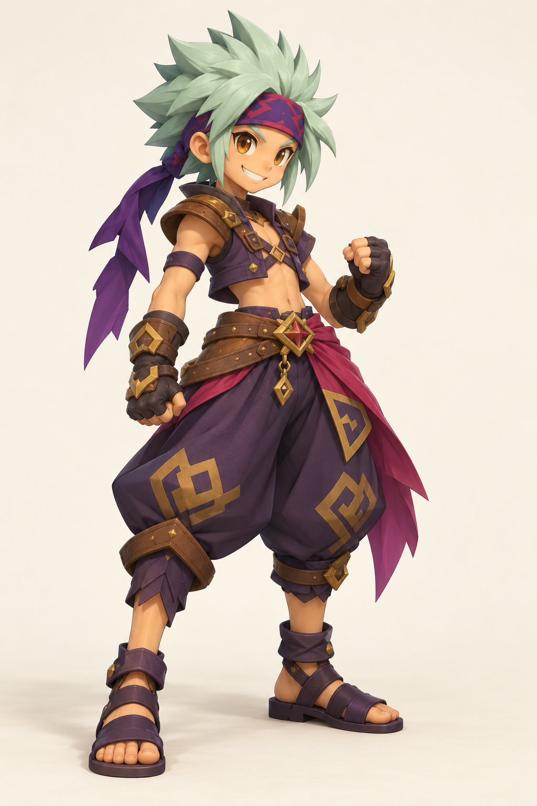

Nouvelle direction accueillie positivement. Cette image de recherche guide la modélisation. Ce n’est pas encore un modèle 3D manipulable.

À reprendre dans le vrai modèle : expression, mèches courbes, plis et matières. À rapprocher de la fiche : pose, sangles du torse, ornements et proportions. Les parties cachées restent à construire et à examiner.